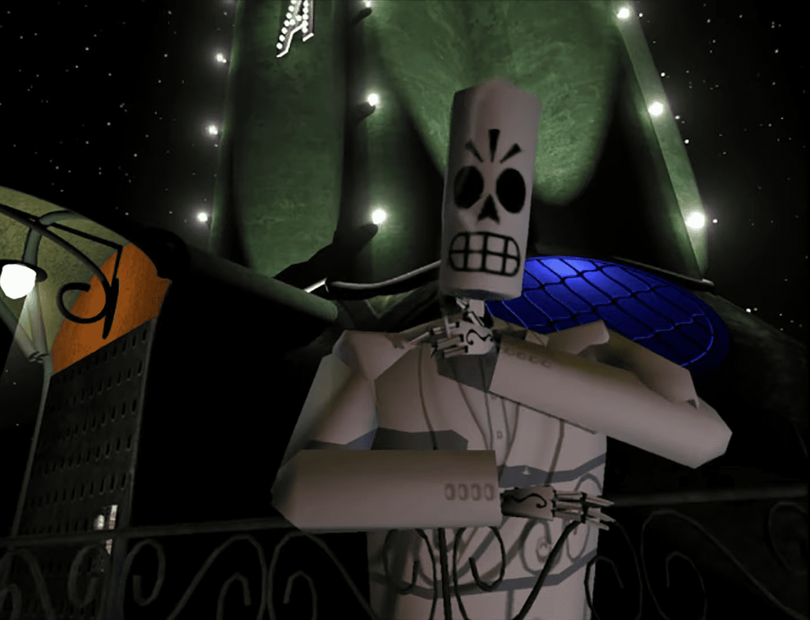
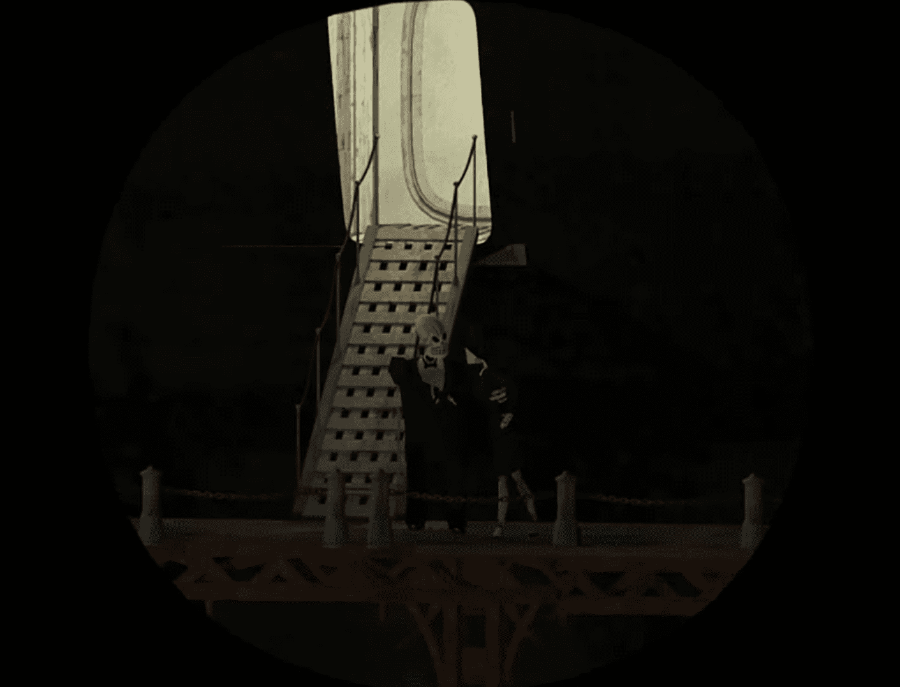
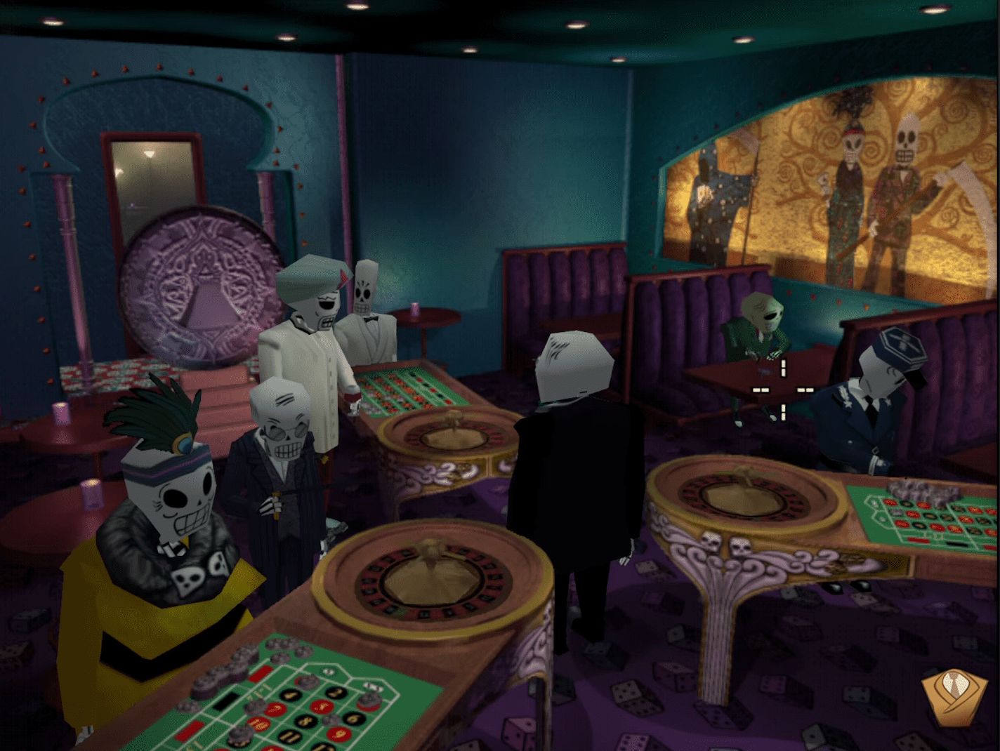
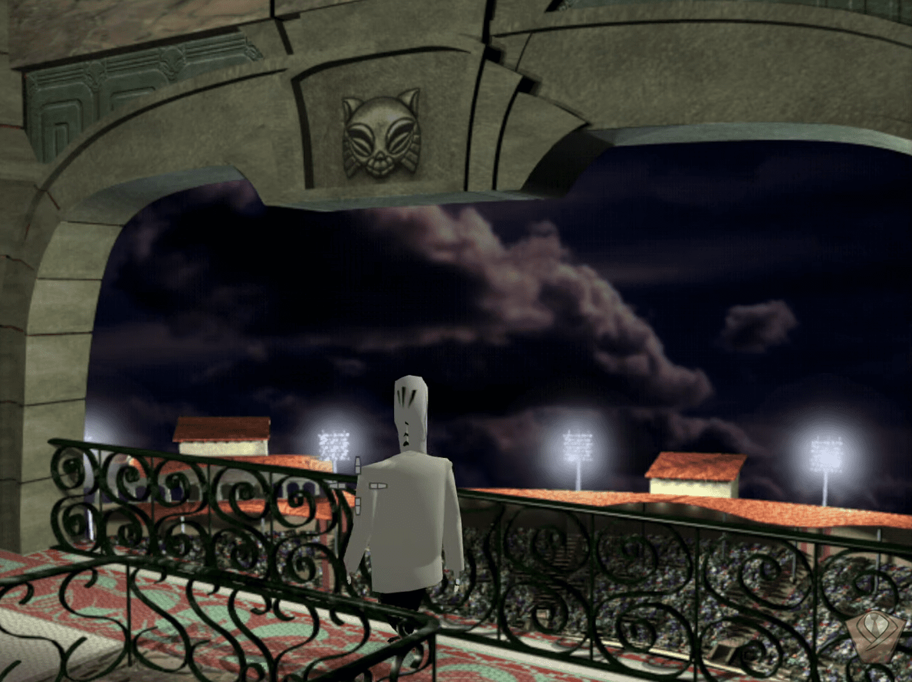
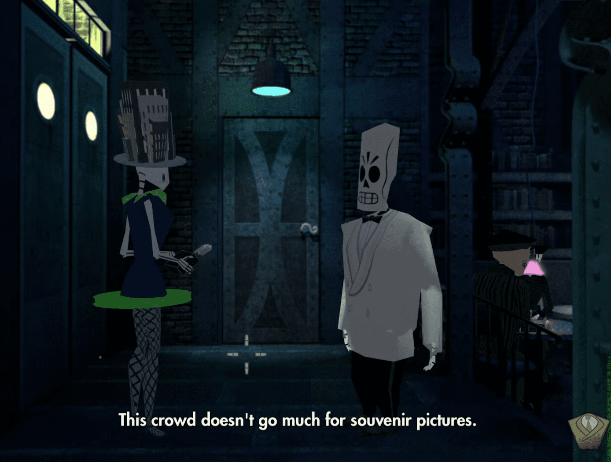
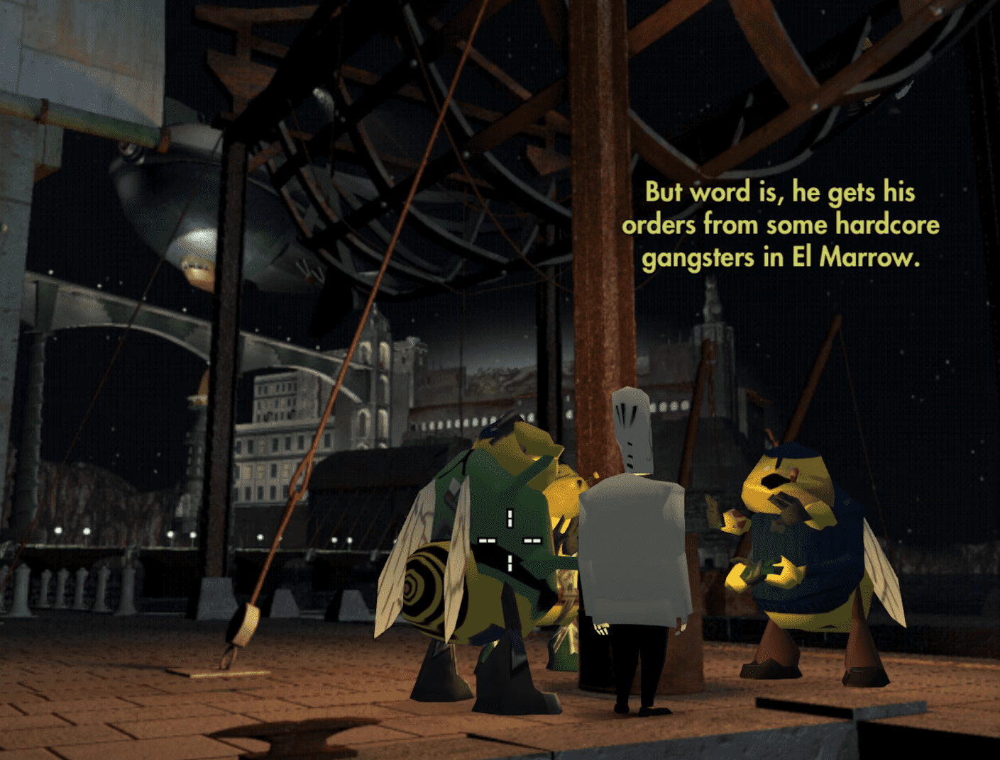

←Segundo año→
Esperando a Meche
Un año ha pasado desde que Manny llegó por primera vez a Rubacava. Ahora es dueño de un café, el Café Calavera, y aún sigue buscando a Mercedes, o Meche. Después de ver una escena corta, ve por la puerta del balcón y gira a la izquierda para entrar inmediatamente en la oficina de Manny. Mientras estés aquí, recoge la nota que está sobre el escritorio más pequeño de Manny en segundo plano.
La nota es de Salvador. Informa que los huevos de paloma han eclosionado y que los polluelos están en entrenamiento. No necesitarás esta carta durante esta sección, pero es bueno tenerla para que no tengas que volver a la oficina de Manny más tarde. Sal del café y baja las escaleras. Esto activará una escena corta.
Manny verá una figura sombría que parece Meche, pero en realidad es solo un pájaro súper espeluznante. Correrá hacia el telescopio en el muelle para ver hacia dónde vuela, luego verá a la verdadera Meche siendo arrastrada a un barco por Domino. Manny intentará abordar el barco, pero por alguna razón Meche le arrojará una botella y él caerá al agua. Una vez más, Velasco sacará a Manny del agua.
Velasco le dice a Manny que el barco de Meche se dirige a Puerto Zapato, y el único barco que se dirige en esa dirección es el Limbo, el barco de Velasco. La escena terminará, así que asegúrate de hablar nuevamente con Velasco.Si eliges la opción de diálogo "Así que déjame entender...", Velasco confirmará tus objetivos. Para unirte a la tripulación del Limbo, necesitarás obtener una Tarjeta del Sindicato Marítimo, deshacerte de Naranja y conseguir herramientas para Glottis.
La Unión Marítima
Después de hablar con Velasco, regresa al Café Calavera. Para hacerlo, ve hacia el norte en el cruce de piedras, pasa por el Blue Casket y entra al ascensor en la parte izquierda. Sube las escaleras y sigue el letrero rojo hacia el café. Una vez que estés de vuelta en el café, dirígete hacia abajo, hacia el bar y el casino, que están a la derecha de la entrada. Glottis solía ser mecánico y ahora es un pianista. Puedes hablar con él, pero eso no es importante en este momento. Ve al bar y toma la botella dorada de licor, el licor Marillo del Oro. Luego baja por el otro tramo de escaleras hacia el casino. Habla con el hombre del traje verde, Charlie.
Después de esta conversación, Charlie te dará su pase VIP para el Salón de los Grandes Apostadores. Si decidiste no obtener el logro, o si ya lo has obtenido, lo siguiente que necesitarás hacer es mostrarle a Glottis el pase VIP. Él lo tomará y correrá hacia el Salón de los Grandes Apostadores, y tendrás que seguirlo. Regresa al cruce de piedras y ve hacia el sur. Terminarás cerca de un garaje y algunas vías de ferrocarril. En la parte trasera de esta área, verás una palanca. Tírala y te permitirá acceder a un puente que te llevará a la pista de gatos.
Sube por la primera escalera hacia el edificio, pero aún no tomes las escaleras de la izquierda. En su lugar, sigue caminando recto hacia la habitación que tiene la estatua de gato masiva. Entra por la puerta de la derecha y verás una caja de arena gigante y latas gigantes de comida para gatos. Ve hacia la comida y toma el Abrelatas. Ahora, regresa a la habitación anterior y sube las escaleras. En la siguiente habitación, entra por la puerta que está justo a la izquierda de la ventanilla de boletos para llegar al salón de los Grandes Apostadores. Glottis estará bebiendo en exceso en el salón VIP después de que le muestres el pase, así que entra en la cocina allí. Toma el inyector que está en la esquina inferior izquierda de la pantalla. Luego, espera a que el camarero entre en el armario y cierra las puertas mientras las bloqueas con tu guadaña. Glottis entrará en la cocina y beberá todo el vino del barril. Cuando haya terminado, sube por la escalera para que puedas usar el Abrelatas en el barril y esconderte dentro. Aitor terminará poniéndote en la sala de almacenamiento abajo del ascensor.
Súbete al Montacargas y entra en el ascensor. Coloca el montacargas en el lado derecho para que pueda avanzar recto y encaje en el agujero inferior derecho de la puerta. Presiona el botón a la derecha para iniciar el ascensor y entra rápidamente en el montacargas. Sigue avanzando para que pueda pasar por el agujero inferior derecho. Aparecerá un piso oculto y el montacargas lo atrapará (esto solo funciona cuando el ascensor está subiendo, no bajando). Sal del montacargas y usa el interruptor en el lado izquierdo del montacargas para levantar la puerta. Dirígete adentro y encontrarás el maletín de Charlie. Cuando salgas, Charlie te detendrá a punta de pistola, pero aún así te dará la Tarjeta del Sindicato Marítimo que necesitas.
Desahaciendote de Naranja
Dirígete al Blue Casket y camina hacia la parte trasera del club. Manny hablará con Lola. Ella está esperando atrapar a Olivia Ofrenda engañando a su novio y dueño del Hipódromo de Gatos, Maximino, con su abogado, Nick Virago. Ella tomará una foto de los dos besándose, luego correrá y Nick la seguirá. Ve por la puerta de la izquierda hacia la cocina y usa la Jeringa de Pavo para recoger el líquido del fregadero. Dirígete a Toto's, que está al sur de la intersección de piedra y sigue hacia el sur. Naranja está haciéndose un tatuaje, así que camina alrededor de ellos y abre la puerta del refrigerador junto con el recipiente de lechuga. Cuando Toto y Naranja estén distraídos y mirando hacia otro lado, usa la Jeringa de Pavo en la botella de Naranja y él quedará inconsciente por la bebida. Toma sus Placas de Identificación cuando esté en la cama.
Ve a las pistas de gatos y habla con Carla en el mostrador de seguridad. Bebe un poco del licor Marillo del Oro de la casa de Manny y pasa por el detector de metales. Escucha la triste historia de Carla (espera hasta que comience a llorar para el trofeo/logro) y dile que solo quieres el Detector de Metales. Ella lo lanzará afuera, al enorme cajón de arena para gatos. Baja por las escaleras hasta la entrada principal y luego gira a la derecha. Ve por la puerta que está frente a la estatua del gato. Camina sobre el puente de metal hasta que estés a unos pasos del borde (debería haber aproximadamente dos conjuntos de puntos entre Manny y el final del puente). Luego usa tu Guadaña en la arena para gatos para encontrar el Detector de Metales. Regresa arriba y sigue caminando pasando las escaleras hasta el puesto de Carla. Cruza el puente y pasa el dirigible. Al final del puente, gira a la izquierda debajo de la estatua y luego entra por las puertas de metal en la parte inferior del edificio de piedra. Aquí encontrarás al médico forense, Membrillo. Espera hasta que no esté mirando y arroja las Placas de Identificación al cuerpo de la izquierda. Dale el Detector de Metales y él informará a Velasco que Naranja está muerto.
Herramientas para Glottis
Ve al Blue Casket. Habla con los chicos en la mesa de la parte inferior derecha y muéstrales el mensaje de Salvador. Pídeles prestado su Libro Rojo y te lo darán. Sal fuera y ve hacia la intersección de piedra y gira a la izquierda. Ve hacia los obreros. Estarán discutiendo su descontento con las condiciones laborales. Dale el libro rojo a los obreros y uno de ellos será arrestado. Necesitas sus herramientas, y para conseguirlas, tendrás que encontrarle un abogado.
Dejando Rubacava
Ve al club de los grandes apostadores y dile a Nick que necesitas un abogado. Muéstrale la foto para ayudar a convencerlo.Para que puedas salir de Rubacava, necesitas que tu casino sea clausurado por estar amañado. Ve al despacho de Manny y usa el arreglo de ruleta en su escritorio verde. Cuando se encienda la luz roja inferior derecha, presiona el botón y la policía te cerrará y obligará a Glottis a salir del salón mientras ambos parten hacia el mar juntos.